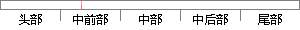

采用链式编程的方式提供给开发者API.
片段位置图

相似结果|
1
原句片段：采用链式编程的方式提供给开发者API.
相似片段 1：这对于有其他编程语言经验的开发者而言,objective-c无...1. 之前的不足: 系统api纯代码布局系统给的自动...通过扩展的方式引入cookie认证,微软采用链式编程,很...
|
※ 片段修改建议 ※
近似词参考：- 采用：采取 接纳 采纳
- 方式：体例 体式格局 方法
系统自动生成语句：采取链式编程的体例提供给开发者API.
注：本片段修改建议为系统自动生成，仅供参考。